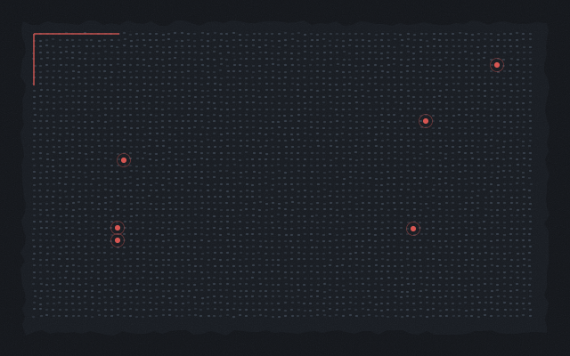
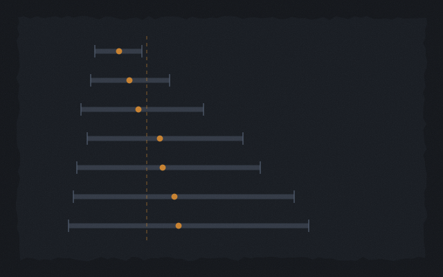
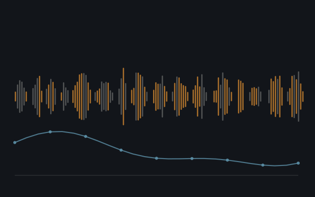

Qixi (Jason) HuangMachine learning & data science
Things I made and then argued with
Six projects. In most of them the part I found interesting came after the model was fitted: the moment it turned out to be wrong, or right for a reason I hadn't noticed, or beaten by something embarrassingly simple. Each page starts with that and gets to the accuracy later.
I'm a quantitative associate at Wells Fargo, working on financial-crime models. M.S. in Machine Learning and Data Science from Northwestern, B.S. in Data Science from UC San Diego.
Projects
Pick one: each opens a working demo
Telemetry · 5 races · 6 models
Race Control
Five Grands Prix replayed lap by lap. Press play and the order, gaps, tyre ages and each car's chance of pitting update the way they would on the pit wall. Two of the six models are fitted across 41 races, because when a team pits depends on the circuit more than on any one afternoon.
Medium and hard tyres never separated. An earlier run on 12 fewer races had them the other way round, inside the same interval. Open Race Control →
Class imbalance · alert queues
What 492 frauds can tell you
0.173% of transactions are fraud, and the standard advice is to rebalance. I fitted 456 configurations to test it, and built the page around the number a fraud team controls: how many alerts it can review.
Rebalancing adds 0.05 average precision to a tuned model and 0.53 to the same settings untuned. It guards against bad hyperparameters. Set the review budget →
Fingerprinting · permutation tests
Is that the driver, or the car
Give a model corner telemetry and ask who is driving, and it beats chance mostly by recognising the car. Teammates drive the same car, so the page compares each driver with the one on the other side of the garage.
Of the cars it identifies correctly, it names the driver 0.611 of the time, against 0.490 for no signal at all. Pick a teammate pair →
Mortgage lending · partial identification
The variable that was left out
297,104 mortgage applications. Each label is a lender's decision, so a model that predicts it well has learned the lenders' policy. Two gaps in the data make the racial denial gap hard to read, and the page puts bounds on both.
Let the 91,321 applications that never got an answer differ by a third from the ones that did, and the denial gap stops having a sign. Move the assumption →
Credit risk · fairness
Who pays for the mistakes
Most projects on this dataset stop at the AUC. A lending decision also needs a cutoff, and wherever it goes, some clients pay for the model's errors. Set what a missed default costs and see who they are.
Ten nested folds said the other model was 4% cheaper. On the held-out split the swap was worth 0.18%. Draw the line yourself →
Transformer NLP · construct validity
Did the drivers have the race you did
Readers rate every Grand Prix out of ten, and team radio is the one channel where you hear a race from inside the car. I transcribed every clip F1 broadcast in 2024 and scored it with a RoBERTa model and a word lexicon. Page through the clips and see where the two disagree.
"Yeah, tough luck" reads −0.81 to the transformer and +0.57 to the lexicon. Swap them and four of ten teams move three places. Read the radio →